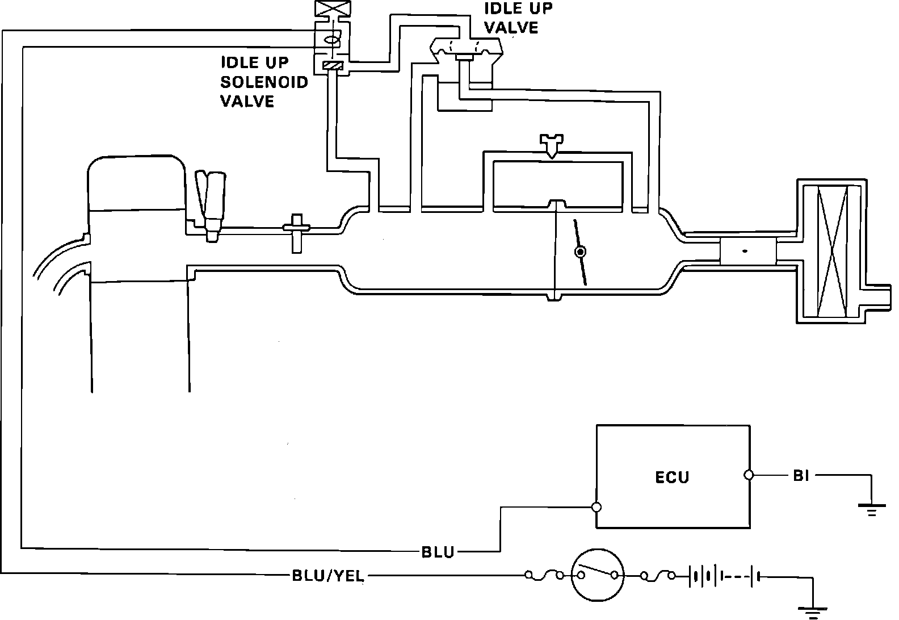

Idle-Up System
Idle-up Control System Schematic:

The idle-up system is used only at start-up in extreme cold conditions. The idle up solenoid receives voltage from ignition switch terminal Ign. 1 whenever the ignition switch is turned ON. When engine speed is less than 1,800 rpm and coolant temperature is less than 14°F (-10°C) ECU pin B2 is grounded. The solenoid then allows vacuum to pull open the idle-up valve. When open, the idle-up valve allows additional air to bypass the throttle plate, which raises idle speed.